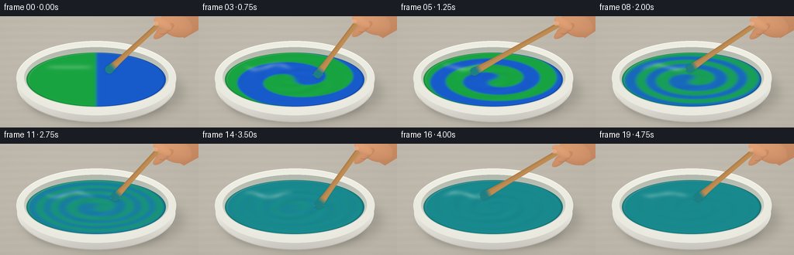
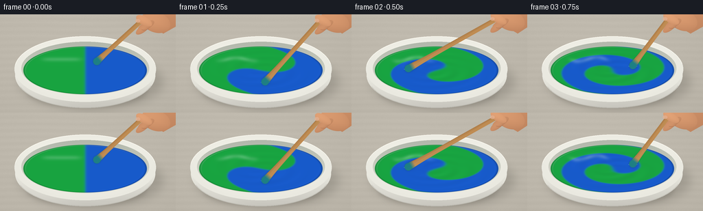

CODING AGENTS AS PIXEL WORLD MODELS
traex/GPT-6.1-Sol · phygen_123
点击播放 · 原生 RGB 像素
逐轮保存的候选
回放视频、检查图与代码变化。
每份候选均可单独播放。实际图片检查记录在下方工具轨迹中。
候选 01播放与检查图
点击播放 · 原生 RGB 像素


展开代码变化
--- 上一保存版本
+++ 本次保存版本
@@ -0,0 +1,225 @@
+from pathlib import Path
+import json
+import math
+import numpy as np
+from PIL import Image, ImageDraw, ImageFilter
+import artifact_io
+
+ROOT = Path(__file__).resolve().parent
+SPEC = json.loads((ROOT / 'task_spec.json').read_text())
+W, H, S = SPEC['width'], SPEC['height'], 3
+WW, HH = W*S, H*S
+Y, X = np.mgrid[0:HH, 0:WW].astype(np.float32)
+X = (X+.5)/S; Y = (Y+.5)/S
+rng = np.random.default_rng(217)
+noise = rng.normal(0, 1, (HH, WW)).astype(np.float32)
+
+
+def mask_draw(fn):
+ im = Image.new('L', (WW, HH))
+ fn(ImageDraw.Draw(im))
+ return np.asarray(im, dtype=np.float32)/255
+
+
+def ellipse(cx, cy, rx, ry):
+ return mask_draw(lambda d: d.ellipse(((cx-rx)*S, (cy-ry)*S, (cx+rx)*S, (cy+ry)*S), fill=255))
+
+
+def over(canvas, color, alpha):
+ alpha = np.clip(alpha, 0, 1)[..., None]
+ return canvas*(1-alpha) + np.asarray(color, np.float32)*alpha
+
+
+def soft(a, radius):
+ return np.asarray(Image.fromarray(np.uint8(np.clip(a,0,1)*255)).filter(ImageFilter.GaussianBlur(radius*S)), np.float32)/255
+
+# A fixed, softly lit work surface. All texture is generated, not sourced.
+base = np.zeros((HH, WW, 3), np.float32)
+vignette = ((X-106)/230)**2 + ((Y-44)/190)**2
+wood = 1.4*np.sin(Y*.65 + .4*np.sin(X*.037)) + .7*np.sin(Y*2.7+X*.013)
+for c, b in enumerate((192, 186, 174)):
+ base[...,c] = b - 12*vignette + wood + noise*.65
+shadow = ellipse(133,99,105,40)
+base = over(base, (64,62,55), soft(shadow, 7)*.22)
+base = over(base, (69,64,54), soft(ellipse(126,112,88,25), 3)*.19)
+
+# Porcelain body, continuous rounded front wall and flared lip.
+body = ellipse(124,89,102,48)
+body_col = np.stack([236-40*np.clip((Y-87)/54,0,1),
+ 235-41*np.clip((Y-87)/54,0,1),
+ 226-40*np.clip((Y-87)/54,0,1)], -1)
+body_col += (5*np.exp(-((X-65)/35)**2))[...,None]
+base = over(base, body_col, body)
+outer = ellipse(124,80,103,48)
+rr = np.sqrt(((X-124)/103)**2+((Y-80)/48)**2)
+rim_col = np.stack([246-12*rr,245-12*rr,236-12*rr],-1)
+rim_col += (4*np.exp(-((Y-48)/19)**2))[...,None]
+base = over(base, rim_col, outer)
+# Inner ceramic wall is exposed along the back of the bowl.
+inner = ellipse(124,79,93,39)
+inner_col = np.stack([179 + 44*np.clip((Y-43)/70,0,1),
+ 184 + 40*np.clip((Y-43)/70,0,1),
+ 172 + 39*np.clip((Y-43)/70,0,1)],-1)
+base = over(base, inner_col, inner)
+# Fine rim highlights and a faint lower edge.
+rimline = mask_draw(lambda d: d.arc((21*S,32*S,227*S,128*S), 187, 351, fill=255, width=1*S))
+base = over(base,(255,253,244),rimline*.65)
+frontline = mask_draw(lambda d: d.arc((23*S,43*S,225*S,137*S), 18,160,fill=255,width=S))
+base = over(base,(149,146,135),frontline*.28)
+
+cx, cy, rx, ry = 124., 82., 90., 35.
+u = (X-cx)/rx; v = (Y-cy)/ry
+r = np.sqrt(u*u+v*v)
+th = np.arctan2(v,u)
+paintmask = np.clip((1-r)*S*ry+.5,0,1)
+
+# Conservative equal initial volumes. Differential rotation stretches the
+# interface into ribbons; local diffusion makes the mixture homogeneous.
+N = 300
+coords = np.linspace(-1.04,1.04,N,dtype=np.float32)
+gv, gu = np.meshgrid(coords,coords,indexing='ij')
+gr = np.sqrt(gu**2+gv**2)
+gtheta = np.arctan2(gv,gu)
+inside = gr<=1
+conc = .5-.5*np.tanh(gu/.025)
+
+
+def sample(field, a, b):
+ xx = np.clip((a+1.04)/2.08*(N-1), 0, N-1.001)
+ yy = np.clip((b+1.04)/2.08*(N-1), 0, N-1.001)
+ xi=xx.astype(np.int32); yi=yy.astype(np.int32)
+ dx=xx-xi; dy=yy-yi
+ return ((1-dx)*(1-dy)*field[yi,xi] + dx*(1-dy)*field[yi,xi+1]
+ +(1-dx)*dy*field[yi+1,xi] + dx*dy*field[yi+1,xi+1])
+
+
+def advance(field, t):
+ dt = .25/12
+ for k in range(12):
+ # A no-slip outer wall with stronger shear near the paddle.
+ speed = .6 + 7.6*np.maximum(1-gr**2,0)**1.45
+ speed += .45*np.sin(3*gtheta-5*(t+k*dt))*np.maximum(1-gr,0)
+ a = gtheta-speed*dt
+ f = sample(field,gr*np.cos(a),gr*np.sin(a))
+ avg = (np.roll(f,1,0)+np.roll(f,-1,0)+np.roll(f,1,1)+np.roll(f,-1,1))*.25
+ strength = .24 + .5*min(t/3.2,1)
+ field = np.where(inside, f + strength*(avg-f),field)
+ # Exactly centered pigment ratio, without adding either pigment.
+ field += .5-float(field[inside].mean())
+ return np.clip(field,0,1)
+
+
+def skin_shape(canvas, pts=None, ell=None, tone=0):
+ if pts is not None:
+ m = mask_draw(lambda d: d.polygon([(a*S,b*S) for a,b in pts],fill=255))
+ else:
+ a,b,ra,rb,angle=ell
+ ca,sa=math.cos(angle),math.sin(angle)
+ xx=(X-a)*ca+(Y-b)*sa; yy=-(X-a)*sa+(Y-b)*ca
+ dist=(xx/ra)**2+(yy/rb)**2
+ m=np.clip((1-dist)*S*min(ra,rb)*.5+.5,0,1)
+ shade = 6*np.sin(X*.042)-.35*(Y-9) + tone
+ if ell is not None:
+ shade += 8*np.sqrt(np.clip(1-dist,0,1)) - 8*np.clip(yy/rb,0,1)
+ color=np.stack([204+shade,143+shade*.85,103+shade*.66],-1)
+ return over(canvas,color,m)
+
+
+def paddle(canvas, ax,ay, bx,by, time):
+ dx,dy=bx-ax,by-ay
+ L=math.hypot(dx,dy); dx/=L;dy/=L
+ along=(X-ax)*dx+(Y-ay)*dy
+ across=-(X-ax)*dy+(Y-ay)*dx
+ # A slender flat, rounded wooden mixing spatula.
+ width=3.3 + 2.2*np.clip(along/L,0,1)**7
+ end=np.maximum(-along,0)+np.maximum(along-L,0)
+ distance=np.sqrt((across/width)**2+(end/width)**2)
+ m=np.clip((1-distance)*S*width+.5,0,1)
+ grain=2*np.sin(across*6.1+.2*np.sin(along*.22))+1.8*np.sin(across*2.2+along*.07)
+ light=11*(1-(across/width)**2)-10*across/width
+ col=np.stack([179+grain+light,129+grain+light*.9, seventy(along)+grain+light*.7],-1)
+ # Paint coats the dipped, lower end; it remains visibly wooden above.
+ coated=np.clip((along-(L-10))/7,0,.93)
+ teal=np.array([19,127,135],np.float32)
+ col=col*(1-coated[...,None])+teal*coated[...,None]
+ # Projected shadow hugs the surface near the insertion point.
+ sh=soft(m*paintmask*np.clip((along-L+32)/27,0,1),1.2)
+ canvas=over(canvas,(5,57,59),sh*.35)
+ return over(canvas,col,m)
+
+
+def seventy(a):
+ return np.full_like(a,74)
+
+frames=[]
+for i in range(SPEC['frames']):
+ t=i/SPEC['fps']
+ if i:
+ conc=advance(conc,t-.25)
+ # The residual interfacial ribbons disperse as stirring continues.
+ fade=1 if t<1.2 else math.exp(-((t-1.2)/1.45)**2)
+ if i>=17: fade=0
+ c=.5+(sample(conc,u,v)-.5)*fade
+ green=np.array([25,165,65],np.float32)
+ blue=np.array([24,91,204],np.float32)
+ pigment=c[...,None]*green+(1-c[...,None])*blue
+ # A modest nonlinear pigment absorption produces a saturated teal.
+ blend=4*c*(1-c)
+ pigment[...,1]+=10*blend
+ pigment[...,2]+=8*blend
+ active = min(1,t/.35) if i<18 else .55
+ phase = -1.1+9.2*t+.25*np.sin(t*8)
+ orbit=.42 + .065*np.sin(4.8*t)
+ pu,pv=orbit*np.cos(phase), orbit*np.sin(phase)
+ px,py=cx+rx*pu,cy+ry*pv
+ # A viscous turning surface and raised wake around the moving paddle.
+ radial=np.maximum(1-r*r,0)
+ h=.010*np.sin(22*r-2*th-6.1*t)*radial*(1-np.exp(-r*r/ .035))*active
+ wake=np.exp(-((u-pu)**2+(v-pv)**2)/.018)
+ h+=.027*wake*active
+ h-=.01*np.exp(-r*r/.05)*active
+ h+=.006*np.exp(-((r-.97)/.021)**2)
+ hy,hx=np.gradient(h,1/(ry*S),1/(rx*S))
+ nx=-hx;ny=-hy;nz=np.ones_like(nx)
+ norm=np.sqrt(nx*nx+ny*ny+nz*nz)
+ nx/=norm;ny/=norm;nz/=norm
+ diffuse=np.clip(-.32*nx-.5*ny+.81*nz,0,1)
+ paint=pigment*(.84+.19*diffuse[...,None])
+ # Studio illumination reflected in the glossy, opaque paint.
+ spec=np.clip(-.25*nx-.35*ny+.902*nz,0,1)**75
+ spec*=.09*active
+ softbox=np.exp(-((u+.38)/.31)**6-((v+.46+.08*np.sin(10*u-3*t)*active)/.09)**2)
+ softbox*=.19+.08*np.sin(13*u-4*t)**2*active
+ glint=np.exp(-((r-.97)/.014)**2)*np.clip(-.4*u-.7*v,0,1)*.28
+ reflection=np.clip(spec+softbox+glint,0,.55)
+ paint=paint*(1-reflection[...,None])+np.array([222,239,226])*reflection[...,None]
+ # Subtle dark meniscus against the bowl wall.
+ paint*= (1-.16*np.exp(-((r-.991)/.018)**2))[...,None]
+ canvas=over(base.copy(),paint,paintmask)
+ # Small moving surface reflection at the insertion point.
+ line=mask_draw(lambda d: d.arc(((px-7)*S,(py-3)*S,(px+7)*S,(py+3)*S),15,162,fill=255,width=S))
+ canvas=over(canvas,(127,202,193),line*paintmask*.40*active)
+
+ # A real hand keeps the spatula moving in rapid, broad circles.
+ ax=206+3*np.sin(phase*.7); ay=10+2*np.cos(phase*.7)
+ canvas=paddle(canvas,ax,ay,px,py,t)
+ # Wrist and palm enter from outside the upper right of the fixed camera.
+ offx=ax-206; offy=ay-10
+ canvas=skin_shape(canvas,pts=[(224+offx,-10),(255,-9),(266,12),(240+offx,28),(218+offx,15)],tone=-1)
+ canvas=skin_shape(canvas,ell=(229+offx,10+offy,22,15,.35),tone=3)
+ # Far fingers then the thumb folded across the wooden handle.
+ canvas=skin_shape(canvas,ell=(215+offx,15+offy,13,5.3,-.48),tone=-6)
+ canvas=skin_shape(canvas,ell=(210+offx,20+offy,12,5,-.65),tone=-3)
+ canvas=skin_shape(canvas,ell=(212+offx,8+offy,13,6.3,.53),tone=9)
+ # Small nail on the thumb, softly shaded and unpolished.
+ nail=ellipse(203+offx,8+offy,3.4,2.6)
+ canvas=over(canvas,(228,177,145),nail*.75)
+ # Tiny contact crease rather than heavy illustration outlines.
+ crease=mask_draw(lambda d: d.arc(((205+offx)*S,(12+offy)*S,(220+offx)*S,(22+offy)*S),30,123,fill=255,width=S))
+ canvas=over(canvas,(139,84,60),crease*.25)
+
+ im=Image.fromarray(np.uint8(np.clip(canvas,0,255))).resize((W,H),Image.Resampling.LANCZOS)
+ frames.append(np.asarray(im))
+
+artifact_io.save(np.stack(frames).astype(np.uint8), ROOT)
+print('Saved',len(frames),'RGB frames:', W,'x',H)
可观测工具轨迹
实际执行的命令与返回图片。
命令 1exit 0
/bin/bash -lc "ls -la && cat prompt.txt && printf '\\n---RULES---\\n' && cat GENERATION_RULES.md && printf '\\n---SPEC---\\n' && cat task_spec.json"
命令 2exit 0
/bin/bash -lc 'cat artifact_io.py'
命令 3exit 0
/bin/bash -lc "cat > generate.py <<'PY'
from pathlib import Path
import json
import math
import numpy as np
from PIL import Image, ImageDraw, ImageFilter
import artifact_io
ROOT = Path(__file__).resolve().parent
SPEC = json.loads((ROOT / 'task_spec.json').read_text())
W, H, S = SPEC['width'], SPEC['height'], 3
WW, HH = W*S, H*S
Y, X = np.mgrid[0:HH, 0:WW].astype(np.float32)
X = (X+.5)/S; Y = (Y+.5)/S
rng = np.random.default_rng(217)
noise = rng.normal(0, 1, (HH, WW)).astype(np.float32)
def mask_draw(fn):
im = Image.new('L', (WW, HH))
fn(ImageDraw.Draw(im))
return np.asarray(im, dtype=np.float32)/255
def ellipse(cx, cy, rx, ry):
return mask_draw(lambda d: d.ellipse(((cx-rx)*S, (cy-ry)*S, (cx+rx)*S, (cy+ry)*S), fill=255))
def over(canvas, color, alpha):
alpha = np.clip(alpha, 0, 1)[..., None]
return canvas*(1-alpha) + np.asarray(color, np.float32)*alpha
def soft(a, radius):
return np.asarray(Image.fromarray(np.uint8(np.clip(a,0,1)*255)).filter(ImageFilter.GaussianBlur(radius*S)), np.float32)/255
# A fixed, softly lit work surface. All texture is generated, not sourced.
base = np.zeros((HH, WW, 3), np.float32)
vignette = ((X-106)/230)**2 + ((Y-44)/190)**2
wood = 1.4*np.sin(Y*.65 + .4*np.sin(X*.037)) + .7*np.sin(Y*2.7+X*.013)
for c, b in enumerate((192, 186, 174)):
base[...,c] = b - 12*vignette + wood + noise*.65
shadow = ellipse(133,99,105,40)
base = over(base, (64,62,55), soft(shadow, 7)*.22)
base = over(base, (69,64,54), soft(ellipse(126,112,88,25), 3)*.19)
# Porcelain body, continuous rounded front wall and flared lip.
body = ellipse(124,89,102,48)
body_col = np.stack([236-40*np.clip((Y-87)/54,0,1),
235-41*np.clip((Y-87)/54,0,1),
226-40*np.clip((Y-87)/54,0,1)], -1)
body_col += (5*np.exp(-((X-65)/35)**2))[...,None]
base = over(base, body_col, body)
outer = ellipse(124,80,103,48)
rr = np.sqrt(((X-124)/103)**2+((Y-80)/48)**2)
rim_col = np.stack([246-12*rr,245-12*rr,236-12*rr],-1)
rim_col += (4*np.exp(-((Y-48)/19)**2))[...,None]
base = over(base, rim_col, outer)
# Inner ceramic wall is exposed along the back of the bowl.
inner = ellipse(124,79,93,39)
inner_col = np.stack([179 + 44*np.clip((Y-43)/70,0,1),
184 + 40*np.clip((Y-43)/70,0,1),
172 + 39*np.clip((Y-43)/70,0,1)],-1)
base = over(base, inner_col, inner)
# Fine rim highlights and a faint lower edge.
rimline = mask_draw(lambda d: d.arc((21*S,32*S,227*S,128*S), 187, 351, fill=255, width=1*S))
base = over(base,(255,253,244),rimline*.65)
frontline = mask_draw(lambda d: d.arc((23*S,43*S,225*S,137*S), 18,160,fill=255,width=S))
base = over(base,(149,146,135),frontline*.28)
cx, cy, rx, ry = 124., 82., 90., 35.
u = (X-cx)/rx; v = (Y-cy)/ry
r = np.sqrt(u*u+v*v)
th = np.arctan2(v,u)
paintmask = np.clip((1-r)*S*ry+.5,0,1)
# Conservative equal initial volumes. Differential rotation stretches the
# interface into ribbons; local diffusion makes the mixture homogeneous.
N = 300
coords = np.linspace(-1.04,1.04,N,dtype=np.float32)
gv, gu = np.meshgrid(coords,coords,indexing='ij')
gr = np.sqrt(gu**2+gv**2)
gtheta = np.arctan2(gv,gu)
inside = gr<=1
conc = .5-.5*np.tanh(gu/.025)
def sample(field, a, b):
xx = np.clip((a+1.04)/2.08*(N-1), 0, N-1.001)
yy = np.clip((b+1.04)/2.08*(N-1), 0, N-1.001)
xi=xx.astype(np.int32); yi=yy.astype(np.int32)
dx=xx-xi; dy=yy-yi
return ((1-dx)*(1-dy)*field[yi,xi] + dx*(1-dy)*field[yi,xi+1]
+(1-dx)*dy*field[yi+1,xi] + dx*dy*field[yi+1,xi+1])
def advance(field, t):
dt = .25/12
for k in range(12):
# A no-slip outer wall with stronger shear near the paddle.
speed = .6 + 7.6*np.maximum(1-gr**2,0)**1.45
speed += .45*np.sin(3*gtheta-5*(t+k*dt))*np.maximum(1-gr,0)
a = gtheta-speed*dt
f = sample(field,gr*np.cos(a),gr*np.sin(a))
avg = (np.roll(f,1,0)+np.roll(f,-1,0)+np.roll(f,1,1)+np.roll(f,-1,1))*.25
strength = .24 + .5*min(t/3.2,1)
field = np.where(inside, f + strength*(avg-f),field)
# Exactly centered pigment ratio, without adding either pigment.
field += .5-float(field[inside].mean())
return np.clip(field,0,1)
def skin_shape(canvas, pts=None, ell=None, tone=0):
if pts is not None:
m = mask_draw(lambda d: d.polygon([(a*S,b*S) for a,b in pts],fill=255))
else:
a,b,ra,rb,angle=ell
ca,sa=math.cos(angle),math.sin(angle)
xx=(X-a)*ca+(Y-b)*sa; yy=-(X-a)*sa+(Y-b)*ca
dist=(xx/ra)**2+(yy/rb)**2
m=np.clip((1-dist)*S*min(ra,rb)*.5+.5,0,1)
shade = 6*np.sin(X*.042)-.35*(Y-9) + tone
if ell is not None:
shade += 8*np.sqrt(np.clip(1-dist,0,1)) - 8*np.clip(yy/rb,0,1)
color=np.stack([204+shade,143+shade*.85,103+shade*.66],-1)
return over(canvas,color,m)
def paddle(canvas, ax,ay, bx,by, time):
dx,dy=bx-ax,by-ay
L=math.hypot(dx,dy); dx/=L;dy/=L
along=(X-ax)*dx+(Y-ay)*dy
across=-(X-ax)*dy+(Y-ay)*dx
# A slender flat, rounded wooden mixing spatula.
width=3.3 + 2.2*np.clip(along/L,0,1)**7
end=np.maximum(-along,0)+np.maximum(along-L,0)
distance=np.sqrt((across/width)**2+(end/width)**2)
m=np.clip((1-distance)*S*width+.5,0,1)
grain=2*np.sin(across*6.1+.2*np.sin(along*.22))+1.8*np.sin(across*2.2+along*.07)
light=11*(1-(across/width)**2)-10*across/width
col=np.stack([179+grain+light,129+grain+light*.9, seventy(along)+grain+light*.7],-1)
# Paint coats the dipped, lower end; it remains visibly wooden above.
coated=np.clip((along-(L-10))/7,0,.93)
teal=np.array([19,127,135],np.float32)
col=col*(1-coated[...,None])+teal*coated[...,None]
# Projected shadow hugs the surface near the insertion point.
sh=soft(m*paintmask*np.clip((along-L+32)/27,0,1),1.2)
canvas=over(canvas,(5,57,59),sh*.35)
return over(canvas,col,m)
def seventy(a):
return np.full_like(a,74)
frames=[]
for i in range(SPEC['frames']):
t=i/SPEC['fps']
if i:
conc=advance(conc,t-.25)
# The residual interfacial ribbons disperse as stirring continues.
fade=1 if t<1.2 else math.exp(-((t-1.2)/1.45)**2)
if i>=17: fade=0
c=.5+(sample(conc,u,v)-.5)*fade
green=np.array([25,165,65],np.float32)
blue=np.array([24,91,204],np.float32)
pigment=c[...,None]*green+(1-c[...,None])*blue
# A modest nonlinear pigment absorption produces a saturated teal.
blend=4*c*(1-c)
pigment[...,1]+=10*blend
pigment[...,2]+=8*blend
active = min(1,t/.35) if i<18 else .55
phase = -1.1+9.2*t+.25*np.sin(t*8)
orbit=.42 + .065*np.sin(4.8*t)
pu,pv=orbit*np.cos(phase), orbit*np.sin(phase)
px,py=cx+rx*pu,cy+ry*pv
# A viscous turning surface and raised wake around the moving paddle.
radial=np.maximum(1-r*r,0)
h=.010*np.sin(22*r-2*th-6.1*t)*radial*(1-np.exp(-r*r/ .035))*active
wake=np.exp(-((u-pu)**2+(v-pv)**2)/.018)
h+=.027*wake*active
h-=.01*np.exp(-r*r/.05)*active
h+=.006*np.exp(-((r-.97)/.021)**2)
hy,hx=np.gradient(h,1/(ry*S),1/(rx*S))
nx=-hx;ny=-hy;nz=np.ones_like(nx)
norm=np.sqrt(nx*nx+ny*ny+nz*nz)
nx/=norm;ny/=norm;nz/=norm
diffuse=np.clip(-.32*nx-.5*ny+.81*nz,0,1)
paint=pigment*(.84+.19*diffuse[...,None])
# Studio illumination reflected in the glossy, opaque paint.
spec=np.clip(-.25*nx-.35*ny+.902*nz,0,1)**75
spec*=.09*active
softbox=np.exp(-((u+.38)/.31)**6-((v+.46+.08*np.sin(10*u-3*t)*active)/.09)**2)
softbox*=.19+.08*np.sin(13*u-4*t)**2*active
glint=np.exp(-((r-.97)/.014)**2)*np.clip(-.4*u-.7*v,0,1)*.28
reflection=np.clip(spec+softbox+glint,0,.55)
paint=paint*(1-reflection[...,None])+np.array([222,239,226])*reflection[...,None]
# Subtle dark meniscus against the bowl wall.
paint*= (1-.16*np.exp(-((r-.991)/.018)**2))[...,None]
canvas=over(base.copy(),paint,paintmask)
# Small moving surface reflection at the insertion point.
line=mask_draw(lambda d: d.arc(((px-7)*S,(py-3)*S,(px+7)*S,(py+3)*S),15,162,fill=255,width=S))
canvas=over(canvas,(127,202,193),line*paintmask*.40*active)
# A real hand keeps the spatula moving in rapid, broad circles.
ax=206+3*np.sin(phase*.7); ay=10+2*np.cos(phase*.7)
canvas=paddle(canvas,ax,ay,px,py,t)
# Wrist and palm enter from outside the upper right of the fixed camera.
offx=ax-206; offy=ay-10
canvas=skin_shape(canvas,pts=[(224+offx,-10),(255,-9),(266,12),(240+offx,28),(218+offx,15)],tone=-1)
canvas=skin_shape(canvas,ell=(229+offx,10+offy,22,15,.35),tone=3)
# Far fingers then the thumb folded across the wooden handle.
canvas=skin_shape(canvas,ell=(215+offx,15+offy,13,5.3,-.48),tone=-6)
canvas=skin_shape(canvas,ell=(210+offx,20+offy,12,5,-.65),tone=-3)
canvas=skin_shape(canvas,ell=(212+offx,8+offy,13,6.3,.53),tone=9)
# Small nail on the thumb, softly shaded and unpolished.
nail=ellipse(203+offx,8+offy,3.4,2.6)
canvas=over(canvas,(228,177,145),nail*.75)
# Tiny contact crease rather than heavy illustration outlines.
crease=mask_draw(lambda d: d.arc(((205+offx)*S,(12+offy)*S,(220+offx)*S,(22+offy)*S),30,123,fill=255,width=S))
canvas=over(canvas,(139,84,60),crease*.25)
im=Image.fromarray(np.uint8(np.clip(canvas,0,255))).resize((W,H),Image.Resampling.LANCZOS)
frames.append(np.asarray(im))
artifact_io.save(np.stack(frames).astype(np.uint8), ROOT)
print('Saved',len(frames),'RGB frames:', W,'x',H)
PY
python generate.py"命令 4exit 0
/bin/bash -lc "python - <<'PY'
import numpy as np
from pathlib import Path
from PIL import Image
p=Path('.')
a=np.load('pixels.npz')['pixels']
assert a.shape == (144,256,20)
assert len(list((p/'frames').glob('*.png'))) == 20
assert all(Image.open(p/'frames'/f'{i:02}.png').size == (256,144) for i in range(20))
assert (p/'index.html').exists()
print('Verified output artifacts, dimensions, and frame count.')
PY
if command -v ffmpeg >/dev/null 2>&1; then ffmpeg -hide_banner -loglevel error -y -framerate 4 -i frames/%02d.png -c:v libx264 -crf 18 -pix_fmt yuv420p -movflags +faststart video.mp4 && ls -lh video.mp4; fi"保存候选 1 份；完成命令 4 次；可验证图片返回 0 张。原始 API 响应与完整日志保留在本地。